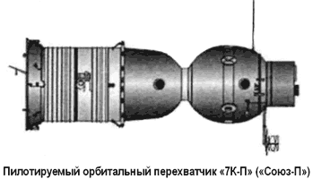
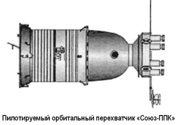
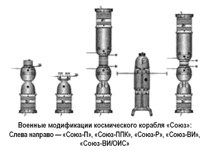
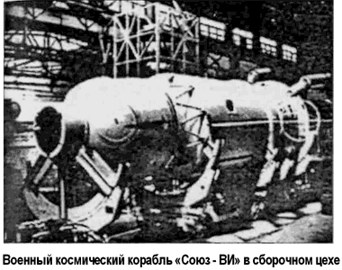

Космонавты идут на абордаж
Советские военные тоже не остались равнодушными к идее орбитального перехвата.
Один из проектов практически повторял американские испытания 1959 года. А именно, предполагалось создание небольшой ракеты, запускаемой с самолета с высоты около 30 километров и несущей заряд около 50 килограммов взрывчатки. Ракета должна была сблизиться с целью и взорваться не далее как в 30 метрах от нее. Работы по этому проекту были начаты в 1961 году и продолжались до 1963 года.
Однако летные испытания не позволили достигнуть тех результатов, на которые надеялись разработчики. Система наведения оказалась не настолько эффективной, как это было необходимо. Испытаний в космосе даже не стали проводить.
Следующий проект родился на волне той эйфории, которая царила в советской космонавтике после полета человека в космос. 13 сентября 1962 года, после совместного полета «Востока-3» и «Востока-4», когда неманеврирующие корабли за счет точности запуска удалось свести на расстояние до пяти километров, Научно-техническая комиссия Генштаба заслушала доклады космонавтов Андрияна Николаева и Павла Поповича о военных возможностях кораблей «Восток».
Вывод из докладов звучал следующим образом: «Человек способен выполнять в космосе все военные задачи, аналогичные задачам авиации (разведка, перехват, удар). Корабли «Восток» можно приспособить к разведке, а для перехвата и удара необходимо срочно создавать новые, более совершенные космические корабли».

Подобные корабли тем временем уже разрабатывались.
На основе пилотируемого орбитального корабля «7К-ОК» («Союз») планировалось создать космический перехватчик — «7К-П» («Союз-П»), который должен был решать проблему инспекции и вывода из строя космических аппаратов противника.
Проект встретил поддержку в лице военного руководства, поскольку уже были известны планы американцев о создании военной орбитальной станции «МОЛ», а маневрирующий космический перехватчик «Союз-П» был бы идеальным средством для борьбы с такими станциями.
Однако из-за общей перегруженности проектами ОКБ-1 пришлось отказаться от заманчивой военной программы.
В 1964 году все материалы по «Союзу-П» были переданы в филиал № 3 ОКБ-1 при куйбышевском авиазаводе «Прогресс». Начальником филиала был ведущий конструктор Дмитрий Козлов. «Союз-П» был далеко не единственной разработкой военного назначения, переданной в филиал.
Здесь, в частности, создавались спутники фоторазведки «Зенит-2» и «Зенит-4».
Первоначально предполагалось, что «Союз-П» будет обеспечивать сближение корабля с вражеским космическим объектом, выход космонавтов в открытый космос с целью обследования объекта. Затем, в зависимости от результатов инспекции, космонавты либо выведут объект из строя путем механического воздействия, либо снимут его с орбиты, поместив в контейнер корабля.
По здравому размышлению от такого сложного технически и опасного для космонавтов проекта отказались. В то время практически все советские спутники снабжались аварийной системой подрыва, с помощью которой можно было уничтожить любой свой спутник, чтобы он не попал в руки противника. Адекватных действий ожидали и от потенциального противника, поэтому резонно заключили, что при таком варианте космонавты могли бы стать жертвами мин-ловушек. От инспекции в таком виде отказались, но сам пилотируемый вариант космического перехватчика продолжал развиваться.
В рамках обновленного проекта предполагалось создать корабль «Союз-ППК» («Пилотируемый перехватчик»), оснащенный восьмью небольшими ракетами. Изменилась и схема действия системы. По-прежнему корабль должен был сблизиться с космическим аппаратом противника, но теперь космонавты не должны были покидать корабль, а визуально и с помощью бортовой аппаратуры обследовать объект и принять решение об его уничтожении. Если такое решение принималось, то корабль удалялся на расстояние до одного километра от цели и расстреливал ее с помощью бортовых мини-ракет.

Габариты космического перехватчика «Союз-ППК»: полная длина — 6,5 метра, максимальный диаметр — 2,7 метра, обитаемый объем (на двух космонавтов) — 13 м3, полная масса — 6700 килограммов.
Помимо корабля-перехватчика «Союз-П» в филиале № 3 Дмитрия Козлова разрабатывались военные корабли «Союз-ВИ» («Военный исследователь») и «Союз-Р» («Разведчик»).
Проект корабля «7К-ВИ» («Союз-ВИ», «Звезда») появился во исполнение постановления ЦК КПСС и Совета Министров от 24 августа 1965 года, предписывающего ускорить работы по созданию военных орбитальных систем. За основу «Союза-ВИ», как и в предыдущих случаях, была принята конструкция орбитального корабля «7К-ОК», но начинка и система управления сильно отличались. Конструкторы филиала № 3 обещали создать универсальный военный корабль, который мог бы осуществлять визуальную разведку, фоторазведку, совершать маневры для сближения и уничтожения космических аппаратов потенциального противника.
Задержки и сбои в программе летно-конструкторских испытаний орбитального «Союза» заставили Козлова в начале 1967 года пересмотреть проект своего военного корабля.

Новый космический корабль «7К-ВИ» с экипажем из двух человек имел полную массу 6,6 тонны и мог работать на орбите в течение трех суток. Однако ракета-носитель «Союз» могла вывести на расчетную орбиту только 6,3 тонны полезного груза. Пришлось дорабатывать и носитель — в результате появился проект новой модернезированной ракеты «Союз-М» («11А511М»).
Проект нового варианта комплекса «Союз-ВИ» был одобрен, и постановлением от 21 июля 1967 года утвердили срок первого полета военно-исследовательского корабля — конец 1968 или начало 1969 года.
В корабле «Союз-ВИ» изменилось расположение основных модулей. Спускаемый аппарат располагался теперь на самом верху. Позади кресел экипажа имелся люк для доступа к цилиндрическому орбитальному отсеку, который был больше, чем по стандарту «Союза». В отличие от других модификаций «Союза», места экипажа располагались не в ряд, а друг за другом. Это позволило разместить приборы контроля и управления по боковым стенам капсулы.
На спускаемом аппарате находилась безоткатная пушка Нудельмана, разработанная специально для стрельбы в вакууме.
Для отработки этой пушки был создан специальный динамический стенд — платформа на воздушных опорах. Испытания на стенде доказали, что космонавт мог бы нацеливать космический корабль и пушку с минимальным расходом топлива.
В орбитальном модуле имелись различные приборы для наблюдения за Землей и околоземным пространством: оптические системы, радары, фотоаппараты. На внешней подвеске орбитального модуля были закреплены штанги с пеленгаторами, предназначенными для поиска вражеских объектов.
Еще одним новшеством, примененным на «Союзе-ВИ», стала энергоустановка на базе изотопного реактора. Вначале Дмитрий Козлов рассматривал возможность использования солнечных батарей, но быстро отказался от этой идеи, поскольку батареи делали корабль уязвимым.
Рассматривался также вариант «Союза-ВИ», оборудованный стыковочным узлом, позволяющим осуществлять стыковку с военной орбитальной станцией «Алмаз».

Габариты космического корабля «Союз-ВИ»: полная длина — 8 метров, максимальный диаметр — 2,8 метра, обитаемый объем — 11 м3, полная масса — 6700 килограммов.
Уже в сентябре 1966 года была сформирована группа космонавтов, которым предстояло освоить новый космический корабль. В нее вошли: Павел Попович, Алексей Губарев, Юрий Артюхин, Владимир Гуляев, Борис Белоусов и Геннадий Колесников. Экипажи Попович-Колесников и Губарев-Белоусов должны были отправиться в космос первыми.
Однако на проект корабля «Союз-ВИ» ополчился Василий Мишин и ряд других ведущих конструкторов ОКБ-1 (ЦКБЭМ). Противники проекта утверждали, что нет смысла создавать столь сложную и дорогую модификацию уже существующего корабля «7К-ОК» («Союз»), если последний вполне способен справиться со всеми задачами, которые могут поставить перед ним военные. Другим аргументом стало то, что нельзя распылять силы и средства в ситуации, когда Советский Союз может утратить «первенство» в лунной «гонке».
Был и еще один мотив. Борис Черток пишет об этом откровенно:
«Мы (ЦКБЭМ. — А. П.) не хотели терять монополию на пилотируемые полеты в космос».
Интрига сделала свое дело: в декабре 1967 года проект военного космического корабля «Союз-ВИ» был закрыт.